1.- Configuración del servidor para que se acceda a todos los sitios con HTTP y HTTPS.
- En el /home del usuario vamos a crear la claves privadas. 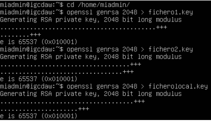
- Ahora generamos la solicitud de certificado, haciendo lo mismo para fichero1 y fichero2. 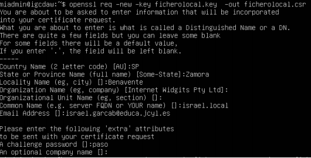 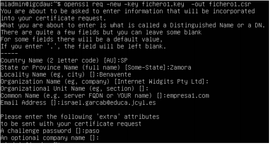 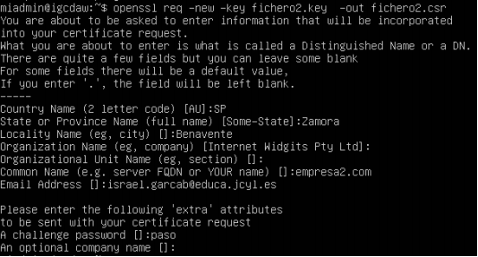
- Autofirmaremos los certificados. 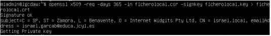
 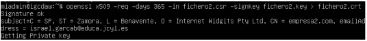
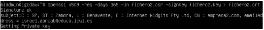
- Movemos las claves privadas y los certificados a las carpetas private y certs respectivamente. 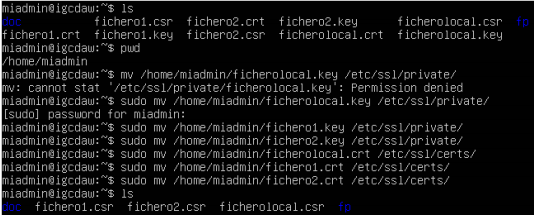
- Vamos a esas carpetas y cambiamos el propietario y los permisos de las claves privadas y los certificados. 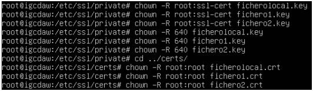
- Activaremos el módulo SSL desde la carpeta /etc/apache/mods-available y reiniciamos el servicio. 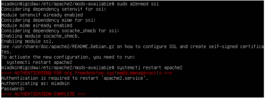
- Vamos a /etc/apache2/sites-available y copiamos el archivo defaultssl.conf en la misma carpeta cambiándolo de nombre. 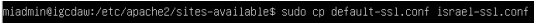
- Editamos el nuevo archivo de la siguiente forma. 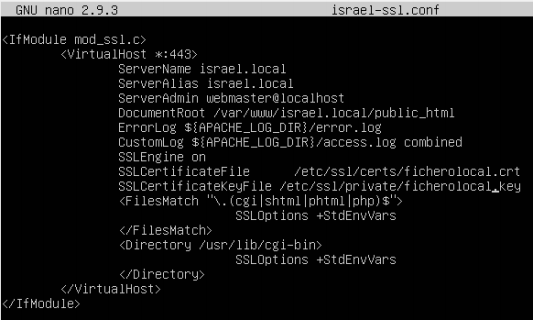
- Copiamos el fichero del sitio renombrándolo para los otros dos sitios. 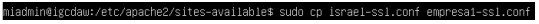 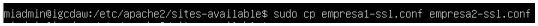
- Los editamos de la siguiente forma. 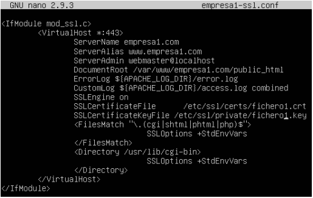 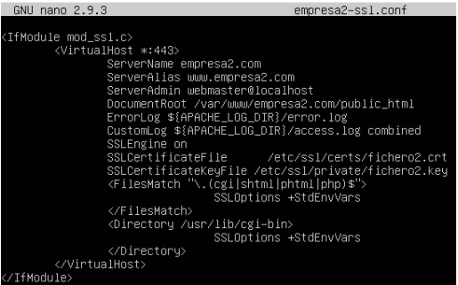
- Checkeamos el fichero, activamos el sitio y reiniciamos el servicio 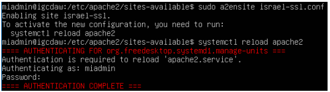 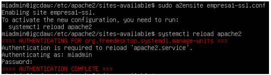
- Desde el navegador accedemos a los sitios con https y accederá de forma segura. 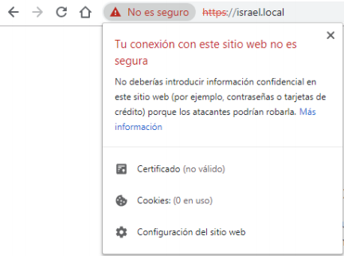 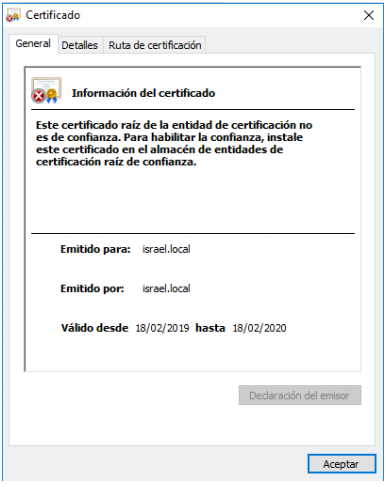 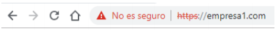